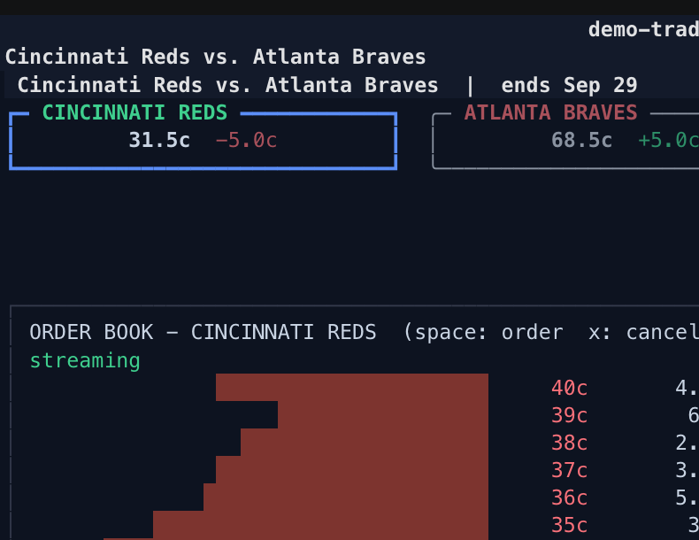

~ $ polymarket-tui
Browse every market, watch order books tick live, chart price history, track your P&L, and place orders — all keyboard, no browser. A terminal client built with Python and Textual.

Open the top market → cursor the live book → place a buy (dry-run: signed, never posted) → flip to the NO book → chart → the trade tape and a top trader → search. Real exchange, real data. Install it.
The full surface of Polymarket as a dense, fast, keyboard-native interface. No mouse required.
Trending, Politics, Sports, Crypto and more, sorted by volume or liquidity. / searches markets and traders.
YES/NO books and the trade tape stream straight from the CLOB. Cursor a level; space starts an order right there.
Full price history inline for any market or outcome. Arrow across the chart to inspect any point in time.
Positions, cash, and profit history for your wallet — or any public trader's book, read-only.
Limit and market orders under the live book, priced in cents. Decimal-exact, validated, audited to a local log.
Every session starts DRY: orders are built and signed, never posted. Going LIVE is an explicit, confirmed opt-in.
Arrows move and drill everywhere; space is always the contextual toggle. Press ? in the app for the full reference.
Browsing needs no account at all. Add credentials only to see your own portfolio or to trade — and trading stays dry-run until you say otherwise. Account setup ↗
Markets, books, charts, trades, and any trader's public positions — read-only, no credentials.
Add your funder address to follow your own positions, cash, and profit history.
Add a private key to place orders. Every session is DRY until you explicitly go LIVE.
Python 3.12+. On PyPI and Homebrew; the curl script installs uv for you if it is missing.
uv tool install polymarket-tui
brew install byronxlg/tap/polymarket-tui
curl -sSL https://raw.githubusercontent.com/byronxlg/polymarket-tui/main/install.sh | bash
git clone https://github.com/byronxlg/polymarket-tui cd polymarket-tui && uv sync && uv run polymarket-tui
Disclaimer Unofficial client, not affiliated with Polymarket. It can place real orders with real money when LIVE mode is explicitly enabled; you are responsible for your trades. No warranty. Deposits, withdrawals, and redemptions are on-chain operations this client does not perform — use the website.
Data from public Polymarket APIs: gamma-api.polymarket.com,
clob.polymarket.com, data-api.polymarket.com, user-pnl-api.polymarket.com.